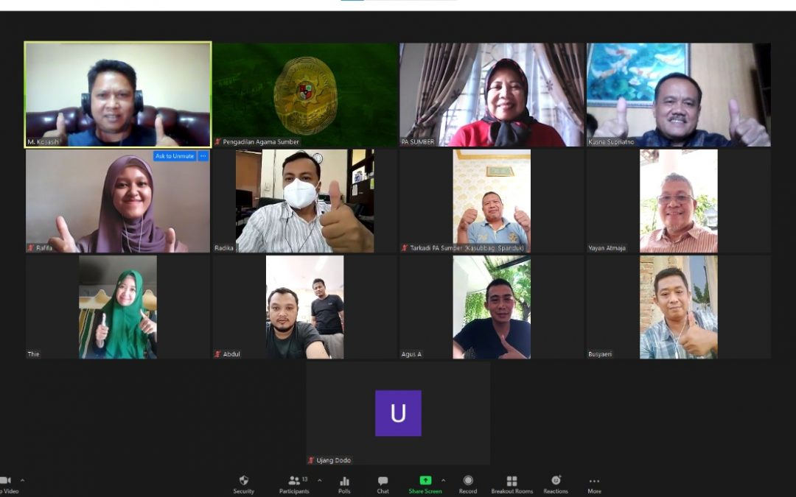

- Products
- Solutions
- Resources
- Plans & Pricing
Download Center
Zoom Workplace desktop app
Phone, Meetings, Chat, Whiteboard and more for your desktop. The web browser client will download automatically when you start or join your first Zoom meeting, and is also available for manual download here.
Zoom Plugin for Microsoft Outlook
Phone, Meetings, Chat, Whiteboard and more for your desktop. The web browser client will download automatically when you start or join your first Zoom meeting, and is also available for manual download here.
Zoom Plugin for IBM Notes
Phone, Meetings, Chat, Whiteboard and more for your desktop. The web browser client will download automatically when you start or join your first Zoom meeting, and is also available for manual download here.
Zoom Extension for Browsers
Phone, Meetings, Chat, Whiteboard and more for your desktop. The web browser client will download automatically when you start or join your first Zoom meeting, and is also available for manual download here.